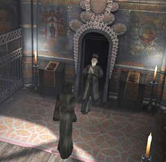

| 概要 | 地図 |
| 淡いヒント集 | ヒント集 | 的確なヒント集 |
| 攻略最短ルート |
| 場所選択に戻る |
修道院

材料が全てそろったところで、この”炉”でロウソクを作ろう。 しかし、その前に置いてあるマッチを回収しておこう。 
では、手順を記す。 1.レバーを引いて点火(カマから湯気が出る) 2.カマに「ベニイバラ」を入れる(湯気が緑色になる) 3.下の筒のフタを開く(画像のように”ろうと”の下の筒状のものが開く) 4.壁につるしてある芯を筒の中に入れる 5.筒のフタをしめる 6.蛇口の上にある弁を押す 7.フタを開く 
できあがったロウソクは、ユコール族の工芸品の中に入れよう。マッチで火を付ければ、その煙かにおいによる効果でハンスが目覚めるはずだ。

ハンスを脱出するための準備をしなければならない。まずは、大修道士のいた部屋の奥へ移動し、「豪華な鍵」を回収しよう。このアイテムは、建物の入り口横にある扉を開けるのに使う。 中に入ったら、ヒモを引っ張ってみよう。修道院に鐘が鳴り響き、修道士達がどこかへ移動してしまう。 
次に棺桶を移動させよう。これで準備は完了。後はハンスを呼びに行くだけだ。
| << 前へ |
|
| 場所選択に戻る |
| 概要 | 地図 |
| 淡いヒント集 | ヒント集 | 的確なヒント集 |
| 攻略最短ルート |
Syberia II
| 目次へ戻る | ページの上部へ |